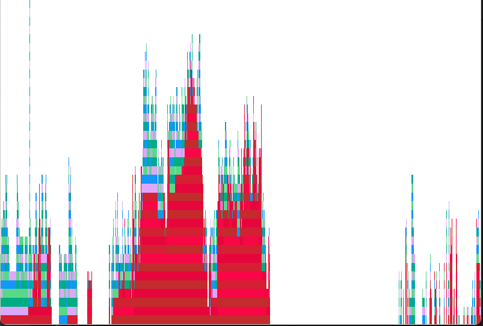

Latency
MathOptInterface suffers the "time-to-first-solve" problem of start-up latency.
This hurts both the user- and developer-experience of MathOptInterface. In the first case, because simple models have a multi-second delay before solving, and in the latter, because our tests take so long to run!
This page contains some advice on profiling and fixing latency-related problems in the MathOptInterface.jl repository.
Background
Before reading this part of the documentation, you should familiarize yourself with the reasons for latency in Julia and how to fix them.
- Read the blogposts on julialang.org on precompilation and SnoopCompile
- Read the SnoopCompile documentation.
- Watch Tim Holy's talk at JuliaCon 2021
- Watch the package development workshop at JuliaCon 2021
Causes
There are three main causes of latency in MathOptInterface:
- A large number of types
- Lack of method ownership
- Type-instability in the bridge layer
A large number of types
Julia is very good at specializing method calls based on the input type. Each specialization has a compilation cost, but the benefit of faster run-time performance.
The best-case scenario is for a method to be called a large number of times with a single set of argument types. The worst-case scenario is for a method to be called a single time for a large set of argument types.
Because of MathOptInterface's function-in-set formulation, we fall into the worst-case situation.
This is a fundamental limitation of Julia, so there isn't much we can do about it. However, if we can precompile MathOptInterface, much of the cost can be shifted from start-up latency to the time it takes to precompile a package on installation.
However, there are two things which make MathOptInterface hard to precompile...
Lack of method ownership
Lack of method ownership happens when a call is made using a mix of structs and methods from different modules. Because of this, no single module "owns" the method that is being dispatched, and so it cannot be precompiled.
This is a slightly simplified explanation. Read the precompilation tutorial for a more in-depth discussion on back-edges.
Unfortunately, the design of MOI means that this is a frequent occurrence! We have a bunch of types in MOI.Utilities that wrap types defined in external packages (i.e., the Optimizers), which implement methods of functions defined in MOI (e.g., add_variable, add_constraint).
Here's a simple example of method-ownership in practice:
module MyMOI
struct Wrapper{T}
inner::T
end
optimize!(x::Wrapper) = optimize!(x.inner)
end # MyMOI
module MyOptimizer
using ..MyMOI
struct Optimizer end
MyMOI.optimize!(x::Optimizer) = 1
end # MyOptimizer
using SnoopCompile
model = MyMOI.Wrapper(MyOptimizer.Optimizer())
julia> tinf = @snoopi_deep MyMOI.optimize!(model)
InferenceTimingNode: 0.008256/0.008543 on InferenceFrameInfo for Core.Compiler.Timings.ROOT() with 1 direct childrenThe result is that there was one method that required type inference. If we visualize tinf:
using ProfileView
ProfileView.view(flamegraph(tinf))we see a flamegraph with a large red-bar indicating that the method MyMOI.optimize(MyMOI.Wrapper{MyOptimizer.Optimizer}) cannot be precompiled.
To fix this, we need to designate a module to "own" that method (i.e., create a back-edge). The easiest way to do this is for MyOptimizer to call MyMOI.optimize(MyMOI.Wrapper{MyOptimizer.Optimizer}) during using MyOptimizer. Let's see that in practice:
module MyMOI
struct Wrapper{T}
inner::T
end
optimize(x::Wrapper) = optimize(x.inner)
end # MyMOI
module MyOptimizer
using ..MyMOI
struct Optimizer end
MyMOI.optimize(x::Optimizer) = 1
# The syntax of this let-while loop is very particular:
# * `let ... end` keeps everything local to avoid polluting the MyOptimizer
# namespace
# * `while true ... break end` runs the code once, and forces Julia to compile
# the inner loop, rather than interpret it.
let
while true
model = MyMOI.Wrapper(Optimizer())
MyMOI.optimize(model)
break
end
end
end # MyOptimizer
using SnoopCompile
model = MyMOI.Wrapper(MyOptimizer.Optimizer())
julia> tinf = @snoopi_deep MyMOI.optimize(model)
InferenceTimingNode: 0.006822/0.006822 on InferenceFrameInfo for Core.Compiler.Timings.ROOT() with 0 direct childrenThere are now 0 direct children that required type inference because the method was already stored in MyOptimizer!
Unfortunately, this trick only works if the call-chain is fully inferrable. If there are breaks (due to type instability), then the benefit of doing this is reduced. And unfortunately for us, the design of MathOptInterface has a lot of type instabilities...
Type instability in the bridge layer
Most of MathOptInterface is pretty good at ensuring type-stability. However, a key component is not type stable, and that is the bridging layer.
In particular, the bridging layer defines Bridges.LazyBridgeOptimizer, which has fields like:
struct LazyBridgeOptimizer
constraint_bridge_types::Vector{Any}
constraint_node::Dict{Tuple{Type,Type},ConstraintNode}
constraint_types::Vector{Tuple{Type,Type}}
endThis is because the LazyBridgeOptimizer needs to be able to deal with any function-in-set type passed to it, and we also allow users to pass additional bridges that they defined in external packages.
So to recap, MathOptInterface suffers package latency because:
- there are a large number of types and functions...
- and these are split between multiple modules, including external packages...
- and there are type-instabilities like those in the bridging layer.
Resolutions
There are no magic solutions to reduce latency. Issue #1313 tracks progress on reducing latency in MathOptInterface.
A useful script is the following (replace GLPK as needed):
using MathOptInterface, GLPK
const MOI = MathOptInterface
function example_diet(optimizer, bridge)
category_data = [
1800.0 2200.0;
91.0 Inf;
0.0 65.0;
0.0 1779.0
]
cost = [2.49, 2.89, 1.50, 1.89, 2.09, 1.99, 2.49, 0.89, 1.59]
food_data = [
410 24 26 730;
420 32 10 1190;
560 20 32 1800;
380 4 19 270;
320 12 10 930;
320 15 12 820;
320 31 12 1230;
100 8 2.5 125;
330 8 10 180
]
bridge_model = if bridge
MOI.instantiate(optimizer; with_bridge_type=Float64)
else
MOI.instantiate(optimizer)
end
model = MOI.Utilities.CachingOptimizer(
MOI.Utilities.UniversalFallback(MOI.Utilities.Model{Float64}()),
MOI.Utilities.AUTOMATIC,
)
MOI.Utilities.reset_optimizer(model, bridge_model)
MOI.set(model, MOI.Silent(), true)
nutrition = MOI.add_variables(model, size(category_data, 1))
for (i, v) in enumerate(nutrition)
MOI.add_constraint(model, v, MOI.GreaterThan(category_data[i, 1]))
MOI.add_constraint(model, v, MOI.LessThan(category_data[i, 2]))
end
buy = MOI.add_variables(model, size(food_data, 1))
MOI.add_constraint.(model, buy, MOI.GreaterThan(0.0))
MOI.set(model, MOI.ObjectiveSense(), MOI.MIN_SENSE)
f = MOI.ScalarAffineFunction(MOI.ScalarAffineTerm.(cost, buy), 0.0)
MOI.set(model, MOI.ObjectiveFunction{typeof(f)}(), f)
for (j, n) in enumerate(nutrition)
f = MOI.ScalarAffineFunction(
MOI.ScalarAffineTerm.(food_data[:, j], buy),
0.0,
)
push!(f.terms, MOI.ScalarAffineTerm(-1.0, n))
MOI.add_constraint(model, f, MOI.EqualTo(0.0))
end
MOI.optimize!(model)
term_status = MOI.get(model, MOI.TerminationStatus())
@assert term_status == MOI.OPTIMAL
MOI.add_constraint(
model,
MOI.ScalarAffineFunction(
MOI.ScalarAffineTerm.(1.0, [buy[end-1], buy[end]]),
0.0,
),
MOI.LessThan(6.0),
)
MOI.optimize!(model)
@assert MOI.get(model, MOI.TerminationStatus()) == MOI.INFEASIBLE
return
end
if length(ARGS) > 0
bridge = get(ARGS, 2, "") != "--no-bridge"
println("Running: $(ARGS[1]) $(get(ARGS, 2, ""))")
@time example_diet(GLPK.Optimizer, bridge)
@time example_diet(GLPK.Optimizer, bridge)
exit(0)
endYou can create a flame-graph via
using SnoopComile
tinf = @snoopi_deep example_diet(GLPK.Optimizer, true)
using ProfileView
ProfileView.view(flamegraph(tinf))Here's how things looked in mid-August 2021: 
There are a few opportunities for improvement (non-red flames, particularly on the right). But the main problem is a large red (non-precompilable due to method ownership) flame.